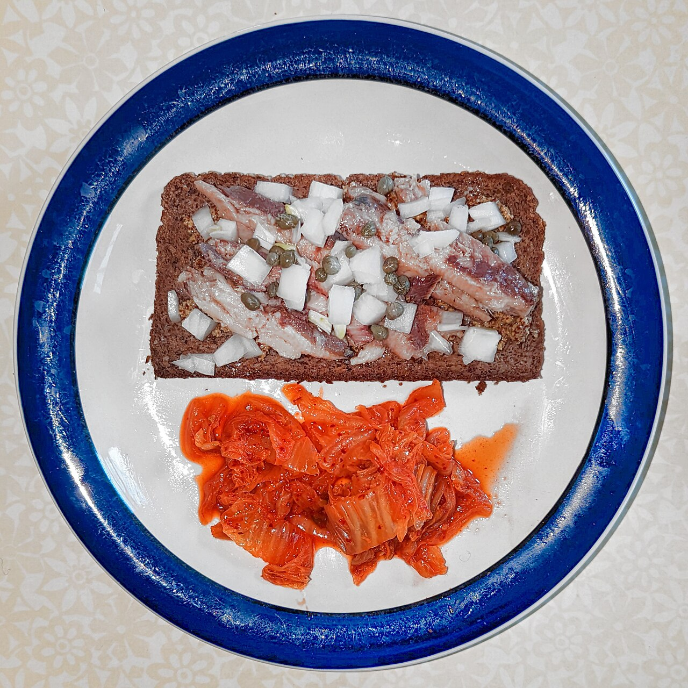
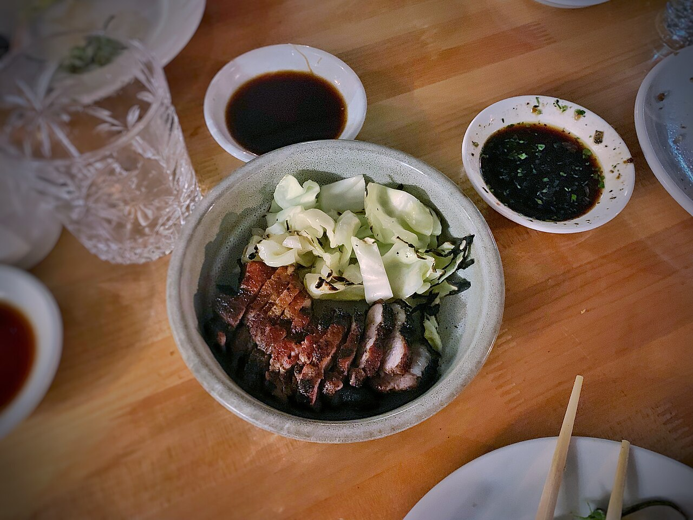
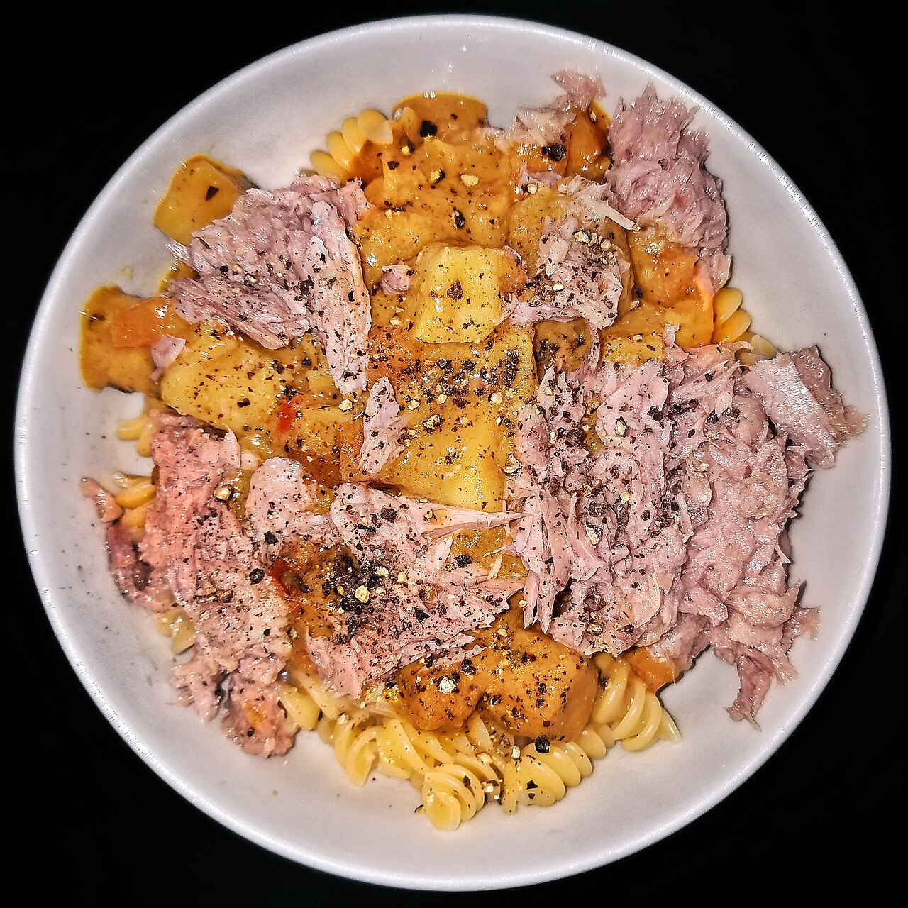
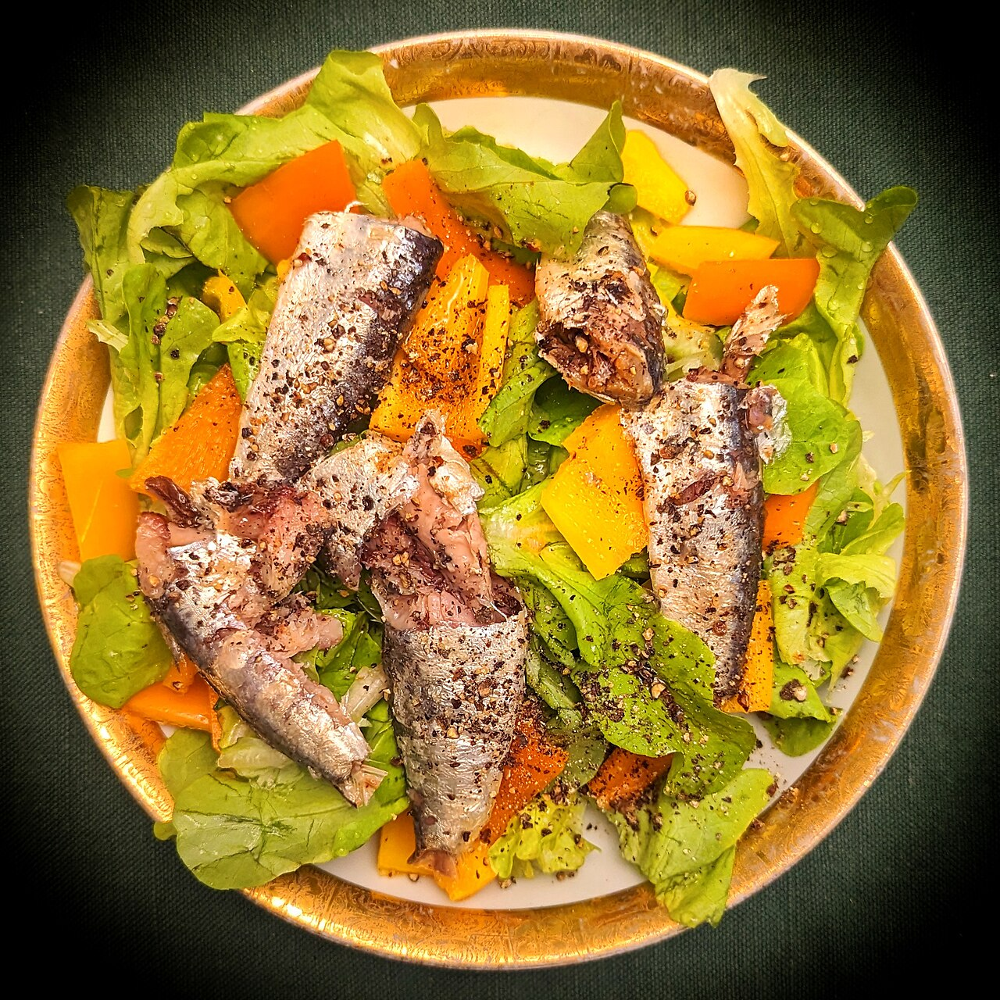
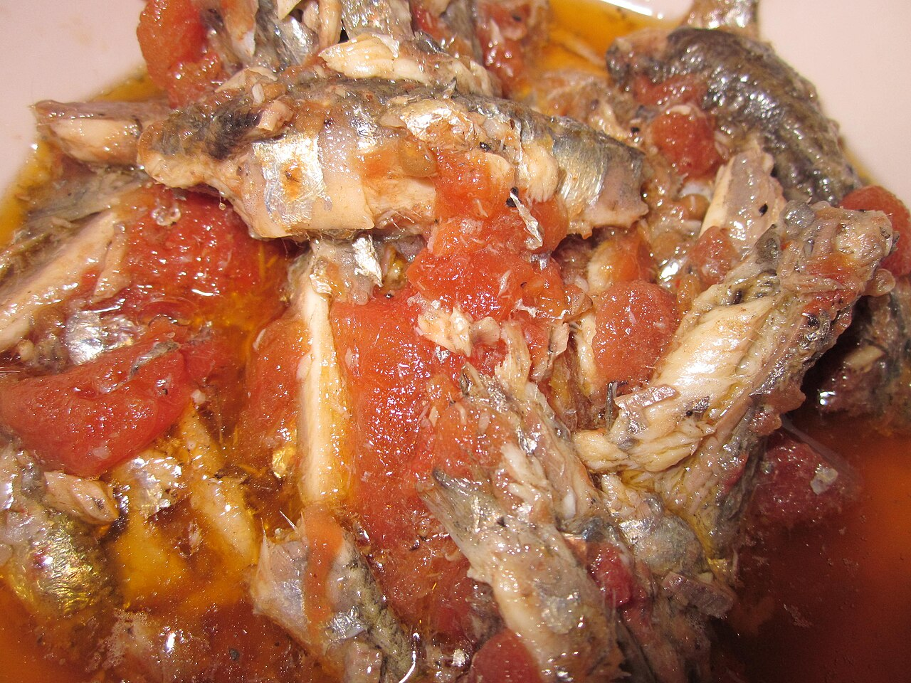
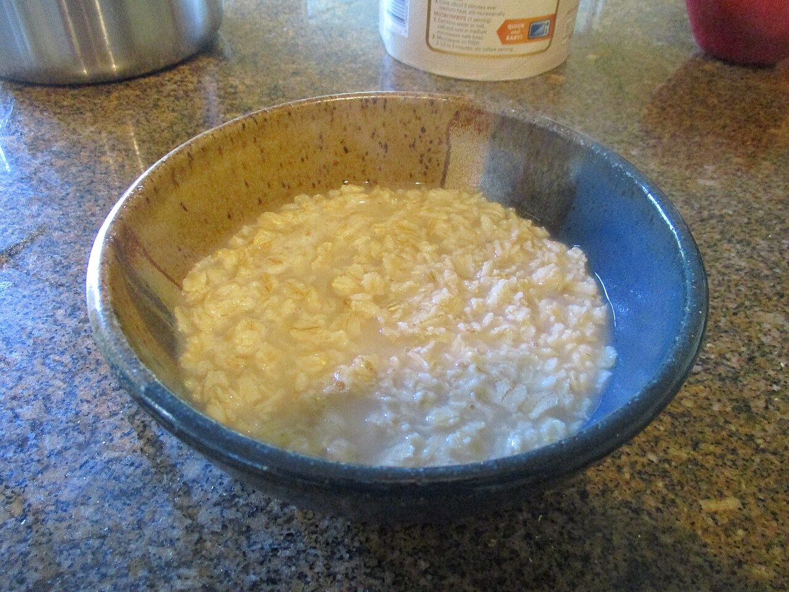
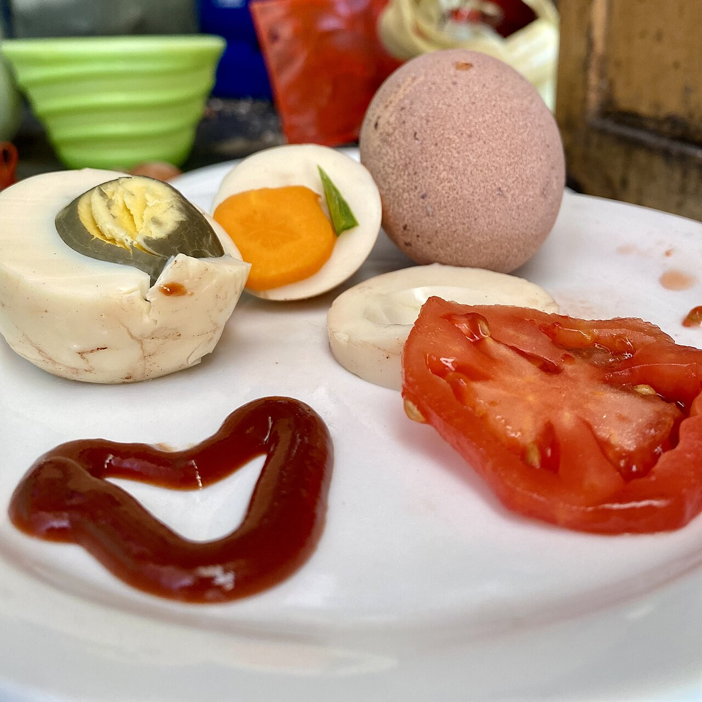
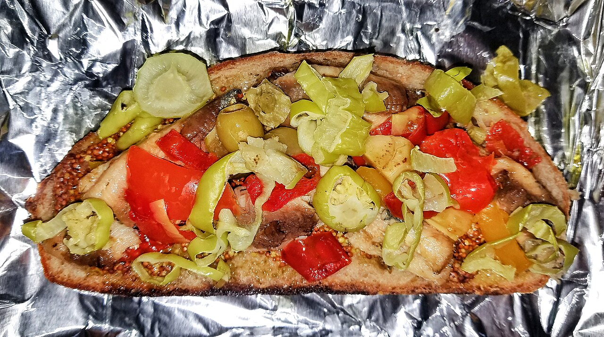

Gusto
Variation 02 of the phase 36 phone. Seed
MByK9NGOQUSZzaw0eTOOGtCK. Same data as
ios-2.html — the goals, the sentence, the
systems, the plan rows with their basis labels, the meals with the
estimate flag, the Apple Health rows — arranged to a different
direction. Every claim about motion on this page is a thing you can
set off yourself: press Play and the Add flow runs, tap a chip and the
rings and the flame answer, toggle a habit and the projection redraws
under your finger.
Direction
MByK9NGOQUSZzaw0eTOOGtCK
- Name
- Gusto. G·U·S·T·O reads straight out of the seed in order, at positions 7, 10, 11, 18 and 19. It is the right word for a screen whose first job is food.
- Mood
- Appetite, written down. The screen is hungry: it wants the plate, it names what it saw, and then it tells you what eight more weeks of the same would cost you in mg/dL.
- Accent
- Mulberry #7A3E63 (#C98BAE in dark) — plum and fig, the colour of what you eat rather than of how you are doing. It tints the block rules, the inner ring, the projection and one 6 % surface wash. Lime is still only the control that adds data; the spectrum is still only a state word. 7.21:1 on the cream, 6.99:1 on the dark canvas.
- Type
- The seed's rhythm is a seven-capital run (NGOQUSZ) broken by one lowercase z, so the page sets 34 px against 11 px with nothing in between: a mono numeral at --type-xl next to a caps label at --type-xs. 15 px carries prose, 13 px carries rows, 21 px appears once, inside the chart tooltip.
- Density
- Two digits in twenty-four characters, so punctuation is rare: 8 px inside a part, 13 px between parts, 21 px between blocks, and one hairline instead of a border wherever a hairline will do.
- Cards
- No card. A block is a mulberry hairline, a caps label and its contents; 21 px radius survives only where something is genuinely a tile (the macro tiles, the photo, the thumbnails). Everything else is flat on the cream.
- Motion
-
One easing, the system curve
cubic-bezier(0.22, 1, 0.36, 1). One duration family from the seed's only two digits, 9 and 0: 90 / 270 / 450 / 900 ms. Nothing loops except the three states that are waiting on a network call. - The one idea
- The double ring. Three O's sit in the seed (…NGO… and …TOOG…), so the two counts that matter share a single centre: the moves on the outside ring in ink, the calories on the inside ring in mulberry. One glance answers both "did I do it" and "did I eat it". And because TOO hides in the seed too, the expectation chart says its verdict in that word: too high, too low, in the band.
Today, and the ticks that tick
Tap any chip. The check draws in over 450 ms, the outer ring fills to the new count, the lime segment flashes once, and when the fifth one lands the week dot fills and the flame leaps to seven. Tap it again and everything goes back, because a tick is a boolean and undoing it is the same write.
Saturday Sep 5
6Seven markers are off. Thyroid is the loudest one.
603kcal left
protein 93 / 120 g
Two of five done. The evening session is the only one left this week.
Morning
Midday
Evening
The outer ring is adopted moves and nothing else, so it can never disagree with the Plan screen. The inner ring is the day's calories against the target, so the two numbers that a person checks first sit on one centre instead of in two cards.
Add, played
Four ways in, one waiting state, one receipt. Choose an input and press Play: the sheet runs the whole sequence on a timer inside the frame. Nothing is written until the receipt appears and the receipt always offers Undo.
Add
The lime scan line is the one place lime appears outside a control, because the scan is the app adding data.
What it would cost you
The quick view after a meal or a tick: the day, then the sentence,
then the chart. The arithmetic is lib/projection.ts —
each intervention's published effect, weighted by grade (A and B in
full, C halved), scaled by your adherence and by how much of the
paper's own duration the horizon covers, summed, then clamped by
MAX_CHANGE (50 mg/dL for LDL). Toggle a habit or a food
rule and the dotted line and the landing number both move. Drag across
the plot and the card follows your finger.
LDL cholesterol
Keep this eight weeks and LDL lands near 102 mg/dL, from 131.
The verdict word is the seed's hidden TOO: above the band is too high, under it is too low, inside it is in the band. It is a coloured word, never a coloured surface.
Meals, and the two verbs that were missing
Real photographs, credited at the foot of the page. Drag a card left — or press Edit / Delete with a keyboard — and the row slides 124 px to show the two verbs the owner could not reach. The estimate word stays on the meal and never on the day, because one weighed meal in three does not make the day weighed.
Body



Photographs: 02-sardines-rye, 02-pork-belly and 02-tuna-chilli, all real and all credited below. A meal with no photograph gets a flat cream tile and a lucide utensils glyph, never a stock picture of somebody else's food.
Meal

318kcal · estimate
Meal detail. Everything is editable except the time it was read and the word “estimate”, because both are facts about how the number was made rather than facts about the food.
Plan: Doing, and Suggested
A suggested row has no habit behind it, so its tick box would write nowhere. Here the suggested group has no boxes at all and a caption says why in one line. Press Adopt and the row leaves Suggested, arrives in Doing with a box, and appears as a new toggle on the expectation chart above — which is the honest thing, because adopting is exactly what changes the projection.
Plan
Saturday Sep 5. Two of five done.
Duplicates collapse: the vitamin D suggestion arrived twice from two different reports and is shown once, with the count on the basis line.
The same parts at 1280
One frame of the web Home, built from the components on this page and nothing else: the week strip, the double ring, the move chips, the expectation chart with its toggles, the meal cards. The chips here tick the same state as the phone's, and the chart is a second instance of the same drawing function, so a change to one is a change to both.
603kcal left
protein 93 / 120 g
Morning
Midday
Evening
Seven markers are off. Thyroid is the loudest one.
Keep this eight weeks and LDL lands near 102 mg/dL, from 131.




Nothing on this frame is a web-only component. The three columns are the phone's three blocks laid side by side, which is the whole point: one set of parts, two widths.
Motion, and the parts
One easing everywhere:
cubic-bezier(0.22, 1, 0.36, 1). One duration family, 90 /
270 / 450 / 900 ms, from the seed's two digits. Everything in the
table is on this page and can be triggered by hand.
What moves
14 rowsReduced motion. One variant covers all of it: every loop stops and shows its end state, the check appears already drawn, chips and callouts appear at full opacity with no offset or blur, the rings jump to their value, the waveform freezes at 55 %, and the counters land on their number without counting. The Add player still runs — the sequence is information, the animation is not — it simply cuts between its states. Nothing is removed, because none of this motion carries anything the words do not.
Component index
what is new herePhotograph credits
Eight real photographs, downloaded from Wikimedia Commons into
ios-variations/img/. No stock food, no rendering.
Every file was fetched with the Commons thumbnail endpoint at 1280 px,
checked with file (all eight are baseline JPEGs between
256 KB and 577 KB) and looked at before it was placed.